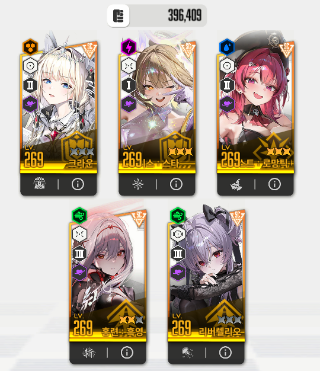
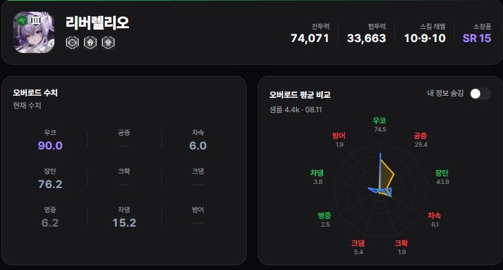
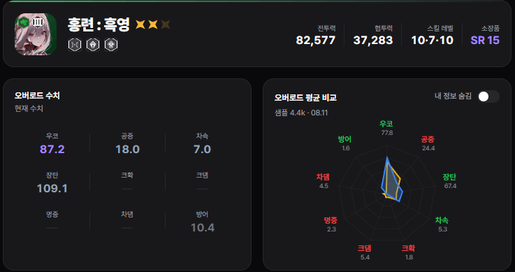
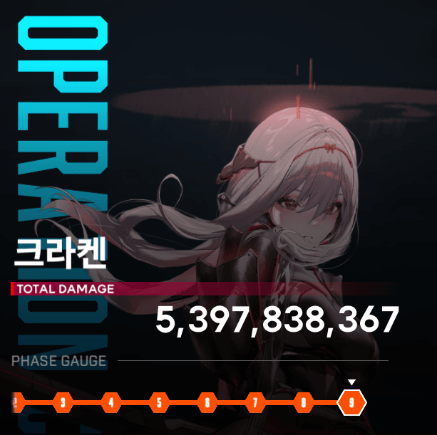
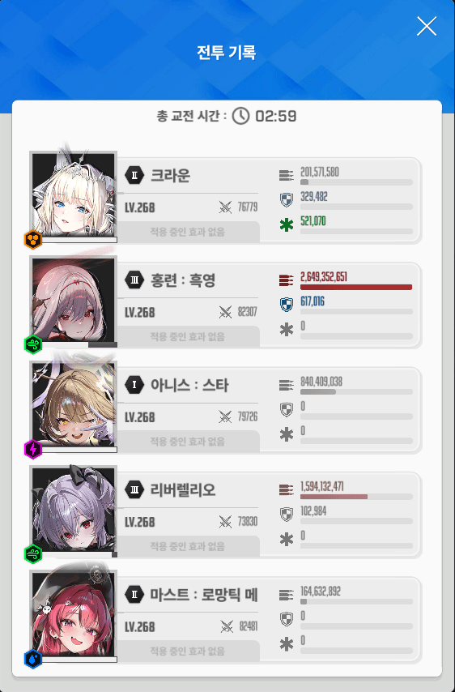

조합은 아 크 메 흑 리

--리버 옵션--

--흑련 옵션--

미미르에서 크라운 넣고 흑버 차심 계산기 돌려본 결과 흑련 선버로 차심이 안들어가서 리버렐 선버
30프레임 소리 및 옵션 다끄기 조준보정 최대
메크메 크크메를 하고 크라켄이 기 모을때 크라운 버스트 방벽이 있게 해서 딜로스 최소화
마지막 버스트는 저지를 조절하고 돌덩이 안날라오게 해서 흑련+메스트 버스트로 마무리
싱크 268에도 깼는데 영상을 안찍어놔서 이미지로 대체함

